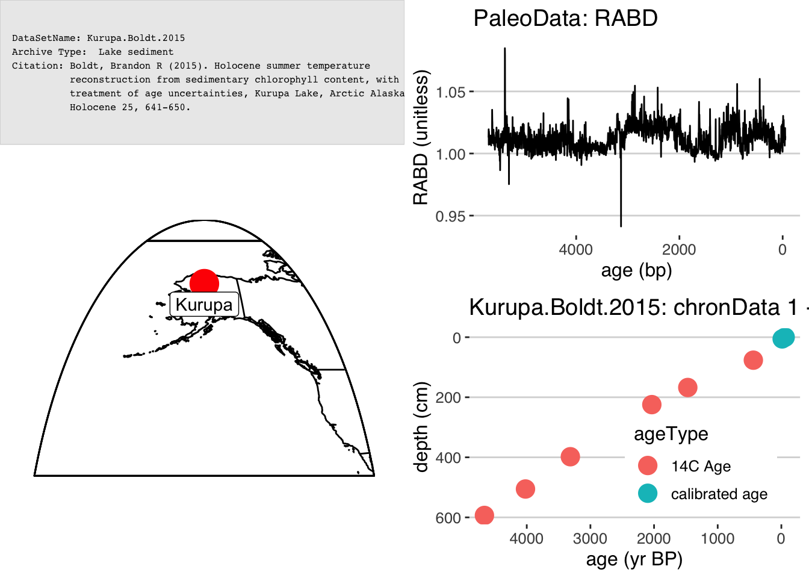
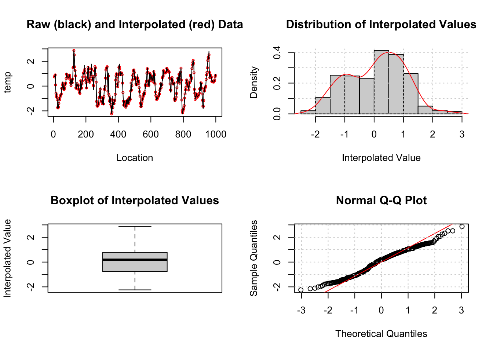

Chapter 7 Regression and Calibration-in-time
In this chapter, we will replicate the analysis of Boldt et al. (2015), performing age-uncertain calibration-in-time on a chlorophyll reflectance record from northern Alaska, using geoChronR.
The challenge of age-uncertain calibration-in-time is that age uncertainty affects both the calibration model (the relation between the proxy data and instrumental data) and the reconstruction (the timing of events in the reconstruction). geoChronR simplifies handling these issues.
Let’s start by loading the packages we’ll need.
library(lipdR) #to read and write LiPD files
library(geoChronR) #of course
library(readr) #to load in the instrumental data we need
library(ggplot2) #for plotting7.1 Load the LiPD file
OK, we’ll begin by loading in the Kurupa Lake record from Boldt et al., 2015. The system.file(...) part of this pulls the example file from the package directory. You’d like just enter the path as a string for typical use.
K <- lipdR::readLipd("http://lipdverse.org/geoChronR-examples/Kurupa.Boldt.2015.lpd")## [1] "reading: Kurupa.Boldt.2015.lpd"7.1.1 Check out the contents
sp <- plotSummary(K,paleo.data.var = "RABD",summary.font.size = 6)## [1] "Found it! Moving on..."
## [1] "Found it! Moving on..."
## [1] "Found it! Moving on..."
## [1] "Found it! Moving on..."
## [1] "Found it! Moving on..."
print(sp)## TableGrob (4 x 4) "arrange": 4 grobs
## z cells name grob
## 1 1 (1-1,1-2) arrange gTree[GRID.gTree.6038]
## 2 2 (1-2,3-4) arrange gtable[layout]
## 3 3 (2-4,1-2) arrange gtable[layout]
## 4 4 (3-4,3-4) arrange gtable[layout]7.2 Create an age model
K <- runBacon(K,
lab.id.var = 'labID',
age.14c.var = 'age14C',
age.14c.uncertainty.var = 'age14CUncertainty',
age.var = 'age',
age.uncertainty.var = 'ageUncertainty',
depth.var = 'depth',
reservoir.age.14c.var = NULL,
reservoir.age.14c.uncertainty.var = NULL,
rejected.ages.var = NULL,
bacon.acc.mean = 10,
bacon.thick = 7,
ask = FALSE,
bacon.dir = "~/Cores",
suggest = FALSE,
close.connection = FALSE)Exercise 7.1 In this chapter, the exercises will have conduct the analysis in a parallel universe, where you make different, but reasonable choices and see what happens.
First, create the best age model you can using either Bchron or Oxcal.
7.2.1 And plot the ensemble output
plotChron(K,age.var = "ageEnsemble",dist.scale = 0.2)## [1] "Found it! Moving on..."
## [1] "Found it! Moving on..."
## [1] "plotting your chron ensemble. This make take a few seconds..."## Scale for 'x' is already present. Adding another scale for 'x', which will replace the existing scale.
Exercise 7.2 Plot your model. How does it compare to the Bacon model?
7.3 Prepare the data
7.3.1 Map the age ensemble to the paleodata table
This is to get ensemble age estimates for each depth in the paleoData measurement table
K <- mapAgeEnsembleToPaleoData(K,age.var = "ageEnsemble")## [1] "Kurupa.Boldt.2015"
## [1] "Looking for age ensemble...."
## [1] "Found it! Moving on..."
## [1] "Found it! Moving on..."
## [1] "getting depth from the paleodata table..."
## [1] "Found it! Moving on..."7.3.2 Select the paleodata age ensemble, and RABD data that we’d like to regress and calibrate
kae <- selectData(K,"ageEnsemble")## [1] "Found it! Moving on..."rabd <- selectData(K,"RABD")## [1] "Found it! Moving on..."7.3.3 Now load in the instrumental data we want to correlate and regress agains
kurupa.instrumental <- readr::read_csv("http://lipdverse.org/geoChronR-examples/KurupaInstrumental.csv")## Rows: 134 Columns: 2## ── Column specification ──────────────────────────────────────────────────────────────────────────────────────────────────────────
## Delimiter: ","
## dbl (2): Year (AD), JJAS Temperature (deg C)##
## ℹ Use `spec()` to retrieve the full column specification for this data.
## ℹ Specify the column types or set `show_col_types = FALSE` to quiet this message.7.3.4 Check age/time units before proceeding
kae$units## [1] "yr BP"yep, we need to convert the units from BP to AD
kae <- convertBP2AD(kae)7.3.5 Create a “variable list” for the instrumental data
kyear <- list()
kyear$values <- kurupa.instrumental[,1]
kyear$variableName <- "year"
kyear$units <- "AD"
kinst <- list()
kinst$values <- kurupa.instrumental[,2]
kinst$variableName <- "Temperature"
kinst$units <- "deg (C)"Exercise 7.3 Repeat all of this prep work, including mapping the age uncertainties and extracting the variables.
7.3.6 Calculate an ensemble correlation between the RABD and local summer temperature data
corout <- corEns(kae,rabd,kyear,kinst,bin.step=2,percentiles = c(.05,.5,.95 ))Exercise 7.4 Calculate the correlation ensemble, but you decide to use 5-year bins instead of 2-year bins.
7.3.7 And plot the output
Note that here we use the “Effective-N” significance option as we mimic the Boldt et al. (2015) paper.
plotCorEns(corout,significance.option = "eff-n")
Mixed results. But encouraging enough to move forward.
Exercise 7.5 After reading Chapter ??, you know that the isospectral method is usually more reliable. Use that instead.
7.4 Perform ensemble regression
OK, you’ve convinced yourself that you want to use RABD to model temperature back through time. We can do this simply (perhaps naively) with regression, and lets do it with age uncertainty, both in the building of the model, and the reconstructing
regout <- regressEns(time.x = kae,
values.x = rabd,
time.y =kyear,
values.y =kinst,
bin.step=3,
gaussianize = FALSE,
recon.bin.vec = seq(-4010,2010,by=20))Exercise 7.6 Again, use 5-year time steps, and also gaussianize to avoid the potential impact of skewed data
7.4.1 And plot the output
regPlots <- plotRegressEns(regout,alp = 0.01,font.size = 8)
This result is consistent with that produced by Boldt et al., (2015), and was much simpler to produce with geoChronR.
7.5 Chapter project
Exercise 7.7 Plot your results. How did making different, reasonable (perhaps even better?) choices affect the final outcome of the regression?
<!--chapter:end:regression.Rmd-->
# Spectral Analysis
In this notebook we demonstrate how to use the spectral analysis features of GeoChronR using the "ODP846" record described in:
- Mix, A. C., J. Le, and N. J. Shackleton (1995a), Benthic foraminiferal stable isotope stratigraphy from Site 846: 0–1.8 Ma, Proc. Ocean Drill. Program Sci. Results, 138, 839–847.
- Shackleton, N. J. (1995), New data on the evolution of Pliocene climate variability, in Paleoclimate and Evolution, With Emphasis on Human Origins, edited by E. S. Vrba et al., pp. 242-248, Yale Univ. Press, New Haven, CT.
The data were aligned to the Benthic Stack of [Lisiecki & Raymo (2005)](https://agupubs.onlinelibrary.wiley.com/doi/abs/10.1029/2004PA001071) using the [HMM-Match](https://agupubs.onlinelibrary.wiley.com/doi/full/10.1002/2014PA002713) algorithm [(Khider et al, 2017)](https://agupubs.onlinelibrary.wiley.com/doi/abs/10.1002/2016PA003057). The latter is a probabilistic method that generates an ensemble of 1000 possible age models compatible with the chronostratigraphic constraints.
We first remotely load the data using the LiPD utilities. Depending on your connectivity, this may take a minute as the file is fairly large (2.6Mb).
```r
library(lipdR) # to load the file
library(geoChronR) # to analyze it
library(ggthemes) # to define plotting theme
library(ggplot2) # to plot
I <- readLipd("http://lipdverse.org/geoChronR-examples/ODP846.Lawrence.2006.lpd")Now let us take a first look at the median age model:
d18O = I$chronData[[1]]$model[[1]]$summaryTable[[1]]$d180$values
t.med <- I$chronData[[1]]$model[[1]]$summaryTable[[1]]$median$values
L <- geoChronR::mapAgeEnsembleToPaleoData(I,paleo.meas.table.num = 1,age.var = "age")
age = geoChronR::selectData(L,"ageEnsemble",meas.table.num = 1)
temp = geoChronR::selectData(L,"temp muller",meas.table.num = 1)
plotTimeseriesEnsRibbons(ggplot(),X=age,Y=temp,color.low="orchid",color.high="darkorange3",color.line="orange",line.width=0.5,alp=0.3) + scale_x_reverse() + theme_hc(style = "darkunica")
This paleoclimate record features:
- a long-term cooling trend (\(\delta^{18}\mathrm{O}\) gets more positive over time) characteristic of late Neogene and Quaternary.
- some quasi-periodic oscillations (the legendary Pleistocene Ice Ages)
- nonstationary behavior, related to the well-known mid-Pleistocene transition from a “41k world” to a “100k world” somewhere around 0.8 Ma (Paillard, 2001).
To keep things simple and lower computational cost, let’s focus on the last million years, and use the median age model. Now, a standard assumption of spectral analysis is that data are evenly spaced in time. In real-world paleo timeseries this is seldom the case. Let’s look at the distribution of time increments in this particular core, as contrained by this tuned age model:
age.median = matrixStats::rowQuantiles(age$values,probs = 0.5)
temp.median = matrixStats::rowQuantiles(as.matrix(temp$values),probs = 0.5)
t <-age.median[age.median < 1000]
X <- temp.median[age.median < 1000]
X <- X - mean(X)
#dfs = dplyr::filter(df,t<=1000)
dt = diff(t)
ggplot() + xlim(c(0,10)) +
geom_histogram(aes(x=dt,y = ..density..), bins = 25, ,alpha = 0.8, fill = "orange") + ggtitle("Distribution of time intervals") + theme_hc(style = "darkunica") + xlab(expression(Delta*"t"))
We see that over the past 1 Ma, the time increments (\(\Delta t\)) are sharply peaked around 2 ka, but they range from 0 to about 7.5 ka. For now, let us assume that the time axis, albeit uneven, is well-known (no uncertainty). ## Time-certain spectral analysis From this point there are two ways to proceed: 1) use methods that explictly deal with unevenly-spaced data, or 2) interpolate to a regular grid and apply standard methods. In the first case, we could use the Lomb-Scargle periodogram or rather its version tailored for paleoclimate data, REDFIT. In the second case, we can interpolate and use a method tailored to evenly-spaced data.
7.5.1 Lomb-Scargle periodogram
This is a very standard method implemented in many packages. For a review, see VanderPlas (2018). There are several ways to implement Lomb-Scargle. geoChronR does this via the lomb package.
To establish significance, we have a few choices. We re-use Stephen Meyer’s excellent astrochron package for this purpose, as it implements the methods described in Meyers, (2012). Several nulls could be chosen here, and we focus first on a power-law, characteristic of many paleoclimate records (e.g. Zhu et al, 2019).
spec.ls <- computeSpectraEns(t,X,method = 'lomb-scargle')
ls.df <- data.frame("freq" = spec.ls$freqs, "pwr" = spec.ls$power)
# estimate significance against a power-law fit
f.low <- 1e-3; f.high <- 0.1
plaw.ls <- astrochron::pwrLawFit(ls.df, dof = 2, flow = f.low, fhigh = f.high, output = 1, genplot = F)
cl.df <- data.frame(plaw.ls[,union(1,c(5:7))]) # extract confidence limits
# rename columns to be less silly
names(cl.df)[1] <- "freq"
names(cl.df)[2] <- "90% CL"
names(cl.df)[3] <- "95% CL"
names(cl.df)[4] <- "99% CL"
# plot this
pticks = c(10, 20, 50, 100, 200, 500, 1000)
prange = c(10,1000)
yl = c(0.01,1000)
p.ls <- plotSpectrum(ls.df,cl.df,x.lims = prange,x.ticks = pticks, y.lims = yl,
color.line='orange', color.cl='white') +
ggtitle("IODP 846 d18O, Lomb-Scargle periodogram") +
theme_hc(style = "darkunica") + theme(axis.ticks.x = element_line(color = "gray"))
# label periodicities of interest
p.ls <- periodAnnotate(p.ls, periods = c(19,23,41,100), y.lims =c(0.01,100))
show(p.ls)
It is clearly seen that the data contain significant energy (peaks) near, but not exactly at, the famed Milankovitch periodicities (100, 41, 23, and 19 kyr). These periodicities (particularly the eccentricity (100kyr) and obliquity (40kyr)) rise above the various power law nulls, but we see hints of higher power at high-frequencies. We shall soon see that this is an artifact of the Lomb-Scargle methods, which does not use any tapers and therefore displays high variance (in this context, spurious peaks). Other methods smooth out that noise.
REDFIT does so via application of Welch’s Overlapped Segment Averaging, which by default uses 3 segments that overlap by about 50%. geoChronR uses its dplR implementation, which differs slightly from the published algorithm (see ?dplR::redfit for details).
spec.redfit <- computeSpectraEns(t,X,method = 'redfit')
redfit.df <- data.frame("freq" = spec.redfit$freq, "pwr" = spec.redfit$power)
cl.df <- data.frame("freq" = spec.redfit$freq, "95% CL" = spec.redfit$power.CL)
names(cl.df)[2] <- "95% CL"
# plot this
pticks = c(10, 20, 50, 100, 200, 500, 1000)
prange = c(10,1000)
yl = c(0.01,1000)
p.ls <- plotSpectrum(redfit.df,cl.df,x.lims=prange,x.ticks = pticks, y.lims = yl,
color.line='orange', color.cl='white') +
ggtitle("IODP 846 d18O, REDFIT estimation") +
theme_hc(style = "darkunica") + theme(axis.ticks.x = element_line(color = "gray"))
# label periodicities of interest
p.ls <- periodAnnotate(p.ls, periods = c(19,23,41,100), y.lims =c(0.01,100))
show(p.ls)
Now, this clearly is smoother, perhaps a little too much. One could play with n50, the size of the window, or iwin, its shape, to reduce the smoothing. There are still peaks near the Milankovitch periodicities, but in many cases they do not stand out (cf 41 kyr).
7.5.2 Multi-taper Method
The Lomb-Scargle periodogram is a decent way to deal with unevenly-spaced timeseries, but it is still a periodogram, which has several problems. In particular, it is inconsistent: the variance of each estimate goes to infinity as the number of observations increases. A much better estimator is Thomson’s Multi-Taper Method Thomson, 1982, which is consistent (the more data you have, the better you know the spectrum, as it should be). Formally, MTM optimizes the classic bias-variance tradeoff inherent to all statistical inference. It does so by minimizing leakage outside of a frequency band with half-bandwidth equal to \(pf_R\), where \(f_R=1/(N \Delta t)\) is the Rayleigh frequency, \(\Delta t\) is the sampling interval, \(N\) the number of measurements, and \(p\) is the so-called time-bandwidth product. \(p\) can only take a finite number of values, all multiples of 1/2 between 2 and 4. A larger \(p\) means lower variance (i.e. less uncertainty about the power), but broader peaks (i.e. a lower spectral resolution), synonymous with more uncertainty about the exact location of the harmonic. So while MTM might not distinguish between closely-spaced harmonics, it is much less likely to identify spurious peaks, especially at high frequencies. In addition, a battery of formal tests have been devised with MTM, allowing under reasonably broad assumptions to ascertain the significance of spectral peaks. We show how to use this “harmonic F-test” below.
A notable downside of MTM is that it only handles evenly-spaced data. Small potatoes! As we saw above, the data are not that far from evenly-spaced, so let’s interpolate and see what we get. Conveniently, both the interpolation routine and MTM are available within the astrochron package.
library(astrochron)
dfs = data.frame(time=t,temp=X)
dti = 2.5 # interpolation interval, corresponding to the mode of the \Delta t distribution
dfe = linterp(dfs,dt=dti)
tbw = 2 #time-bandwidth product for the analysis; we use the minimum allowed to limit smoothing.Most of the astrochron routines produce a diagnostic graphical output, which you can silence by turning the genplot flag to FALSE. However, it is instructive to take a peak at the top-left panel and see where the interpolation has made a difference. We see that the black line closely espouses the red measurements for most of the timeseries, reassuring us that this process did not introduce spurious excursions or oscillations.
Now let’s compute the spectrum using MTM on the equally-spaced data stored in dfe.
We continue to manually label Milankovitch frequencies (in orange) and label in green (technically, “chartreuse”) the periodicities identified as significant by the test. Here, we start with the default option of a test against an AR(1) background.
spec.mtm <- computeSpectraEns(dfe$time,dfe$temp,method = 'mtm', tbw=tbw) # tbw is the time-bandwidth product, p in the above
sig.freq <- astrochron::mtm(dfe,tbw=tbw, padfac=5,ar1=TRUE,genplot = F,output=2, verbose = F, detrend=T)
mtm.df <- data.frame("freq" = spec.mtm$freqs, "pwr" = spec.mtm$power)
# plot this
prange = c(5,1000)
p.mtm <- plotSpectrum(mtm.df,x.lims=prange,x.ticks = pticks, y.lims = c(1e-6,10), color.line='orange') +
ggtitle("IODP 846 d18O, Multi-taper method, AR(1) null") + xlab("Period (ky)") +
theme_hc(style = "darkunica") + theme(axis.ticks.x = element_line(color = "gray"))
# label periodicities of interest
p.mtm <- periodAnnotate(p.mtm, periods = c(19,23,41,100), y.lims = c(1e-6,1))
p.mtm <- periodAnnotate(p.mtm, periods = 1/sig.freq$Frequency,color = "chartreuse",y.lims = c(1e-6,.1))
show(p.mtm)
You may notice a few differences to the Lomb-Scargle periodogram. First, the high frequency part is much smoother, getting rid of a lot of high-frequency noise. There is also a clear power law behavior from periods of 5 to 100 ky, which in this log-log plotting convention manifests as a linear decrease. Astrochron implements several tests to detect harmonic (sinusoidal) components. Like all tests, they are heavily dependent on a null hypothesis. By default, astrochron::mtm() assumes that we test against an AR(1) model. Using the option output = 2, it will export the frequencies identified as “significant” by this procedure. In this case, it roughly identifies the Milankovitch frequencies we expected to find, plus many others. What should we make of that? The 100ka cycle is now labeled as 90 ka, though given the peak’s width, one should not be foolish enough to consider them distinct. There is also evidence that this peak may be the result of ice ages clustering every 2 to 3 obliquity cycles (81 or 123 ka), averaging around 100 over the pleistocene Huybers & Wunsch (2005). Bottom line: with such spectral resolution, 94 and 100 are one and the same, and may really be a mixture of 80 and 120. Overall, this test identifies 8 periodicities as significant, compared to the 4 we’d expect.
It’s helpful to take a step back and contemplate our null hypothesis of AR(1) background, and the real possibility that without adjustments, we might be underestimating the lag-1 autocorrelation, hence making the test too lenient. There are alternatives to that in Astrochron, using either the robust method of Mann & Lees (1996) or a less error-prone version by the author Meyers, (2012), called LOWSPEC. You might want to experiment with that.
Another factor to play with is the padding factor (padfac). In a nutshell, padding helps increase the spectral resolution at little to no cost (see here for an informal account). You should also try and see what happens when it varies. (note: we used the Astrochron default values here)
Most important of all is the choice of null (Vaughan et al, 2011). Past work has shown that the continuum of climate variability is well described by power laws Huybers & Curry (2006), so this should be a far better null against which to test the emergence of spectral peaks. Never fear! Astrochron has an app for that:
mtmPL.df <- computeSpectraEns(t,X,method = 'mtm', tbw=tbw, mtm_null = 'power_law') # tbw is the time-bandwidth product, p in the above
sig.freqPL <- astrochron::mtmPL(dfe,tbw=tbw,padfac=5,genplot = F,output=2, verbose = F, flow=f.low, fhigh=f.high)
mtm.df = mtmPL.df[c(1,2)]
names(mtm.df)[1] <- "freq"
names(mtm.df)[2] <- "pwr"
cl.df <- data.frame(mtmPL.df$freqs,mtmPL.df$power.CL) # extract confidence limits
# rename columns to be less silly
names(cl.df)[1] <- "freq"
#names(cl.df)[2] <- "90% CL"
names(cl.df)[2] <- "95% CL"
#names(cl.df)[4] <- "99% CL"
# plot it
p.mtmPL <- plotSpectrum(mtm.df,cl.df,x.lims = prange,x.ticks = pticks,
y.lims = c(1e-6,10),color.line='orange', color.cl='white') +
ggtitle("IODP 846 d18O, Multi-taper method, power-law null") + xlab("Period (ky)") +
theme_hc(style = "darkunica") + theme(axis.ticks.x = element_line(color = "gray"))
# label periodicities of interest
p.mtmPL <- periodAnnotate(p.mtmPL, periods = c(19,23,41,100), y.lims = c(1e-6,1))
p.mtmPL <- periodAnnotate(p.mtmPL, periods = 1/sig.freqPL$Frequency,color = "chartreuse",y.lims = c(1e-6,.1))
show(p.mtmPL)
Sure enough, this gets rid of a few cycles, but many remain. A few regions of the spectrum poke above the 95% confidence limit, but one should not be so foolish as to identify every single periodicity in these ranges to be independent. This is related to the multiple hypothesis problem. However, as pointed out by Meyers, (2012), even that misses the point: sedimentary processes (and many processes in other proxy archives) tend to smooth out the signal over the depth axis (hence, over time), making comparisons at neighboring frequencies highly dependent. One solution is to use predictions made by a physical model about the frequency and relative amplitude of astronomical cycles Meyers & Sageman, 2007. However this may not be applicable to all spectral detection problems. We thus refrain from implementing “cookie-cutter” solutions in GeoChronR, to force the user to think deeply about the null hypothesis and the most sensible way to test it.
7.5.3 Weighted Wavelet Z-transform (nuspectral)
An interpolation-free alternative to MTM is the Weighted Wavelet Z-transform of Foster, (1996). The idea of spectral analysis is to decompose the signal on an orthogonal basis of sines and cosines. Data gaps cause this basis to lose its orthogonality, creating energy leakage. WWZ mitigates this problem using an inverse approach. Because it is wavelet based, it does not rely on interpolation or detrending. WWZ was adapted by Kirchner & Neal (2013), who employed basis rotations to mitigate the numerical instability that occurs in pathological cases with the original algorithm. A paleoclimate example of its use is given in Zhu et al (2019)).
The WWZ method has one adjustable parameter, a decay constant that balances the time resolution and frequency resolution of the wavelet analysis. The smaller this constant is, the sharper the peaks.
We wanted to offer GeoChronR users a better alternative to Lom-Scargle, but the WWZ code is relatively complex. We thus chose to incoporate the nuspectral method of Mathias et al (2004) based on a similar idea. However, it is not equivalent to WWZ. The main difference has to do with the approximation of the mother wavelet by a cubic polynomial with compact support. This speeds up computation at the cost of much accuracy. Mathias et al (2004) also describe implementations of complex wavelets in C (a compiled language, faster with loops), but we were not able to obtain any sensible results with those. For now, it is incorporated into GeoChronR to encourage further development.
Readers interested in a more robust implementation of WWZ may want to consider pyleoclim, a Python package. This can be called in R via the Reticulate package.
7.6 Time-uncertain spectral analysis
Now let’s consider age uncertainties.
The GeoChronR approach to quantifying and propagating those uncertainties is to leverage the power of ensembles. Here we will illustrate this with MTM. Let us repeat the previous analysis by looping over the 1,000 age realizations output by the tuning algorithm HMM-Match. That means computing 1000 spectra. We’ve already seen that nuspectral is too slow for an ensemble job, so let’s leave it out. Also, since REDFIT is a tapered version of Lomb-Scargle, and comes with more features, let’s focus here on comparing an REDFIT and MTM in ensemble mode.
time = age$values[age.median < 1000,] # age ensemble for ~ last 1 Ma
values = temp$values[age.median < 1000]
mtm.ens.spec = computeSpectraEns(time,values,
max.ens = 1000,
method = 'mtm',
tbw=tbw, padfac=5,
mtm_null = 'AR(1)')This took a few seconds with 1000 ensemble members, and the resulting output is close to 10 Mb. Not an issue for modern computers, but you can see why people weren’t doing this in the 70’s, even if they wanted to. Now, let’s plot the result:
ar1.df <- data.frame(mtm.ens.spec$freqs,mtm.ens.spec$power.CL)
# rename columns to be less silly
names(ar1.df)[1] <- "freq"
names(ar1.df)[2] <- "95% CL"
p.mtm.ens <- plotSpectraEns(spec.ens = mtm.ens.spec, cl.df = ar1.df, x.lims = c(10,150), y.lims = c(1e-5,1e-1),
color.line='darkorange',
color.low='darkorange2',
color.high='coral4',color.cl = 'white') +
ggtitle("IODP 846 age ensemble, MTM") + theme_hc(style = "darkunica") +
theme(axis.ticks.x = element_line(color = "gray"))
# label periodicities of interest
p.mtm.ens <- periodAnnotate(p.mtm.ens, periods = c(19,23,41,100), y.lims =c(0.01,0.05))
show(p.mtm.ens)
To this we can add the periods identified as significant owing to MTM’s harmonic ratio test. geoChronR deals with it by computing at each frequency the fraction of ensemble members that exhibit a significant peak. One simple criterion for gauging the level of support for such peaks given age uncertainties is to pick out those periodicities that are identified as significant more than 50% of the time.
per = 1/cl.df$freq
sig_per = which(mtm.ens.spec$sig.freq>0.5)
p.mtm.ens <- periodAnnotate(p.mtm.ens, periods = per[sig_per],color = "chartreuse",y.lims = c(1e-5,5e-4))
show(p.mtm.ens)
One could of course, impose a more stringent criterion (e.g. 80%, 90%, etc). To do that, specify which(mtm.ens.spec$sig.freq>0.8) or which(mtm.ens.spec$sig.freq>0.9). That relatively close peaks appear significant may be an artifact of neglecting the multiple hypothesis problem (cf Vaughan et al, 2011).
So what do we find? Consistent with previous investigations (e.g. Mudelsee et al 2009), the effect of age uncertainties is felt more at high frequencies, with the effect of broadening peaks, or lumping them together. Again, the peaks that rise above the power-law background are the ~100kyr and ~40kyr peaks, which is not surprising. There is significant energy around the precessional peaks, but it is rather spread out, and hard to tie to particular harmonics. No doubt a record with higher-resolution and/or tighter chronology would show sharper precessional peaks.
Do we get the same answer in REDFIT? Let’s find out.
spec.redfit.ens <- computeSpectraEns(time,values,max.ens = 1000, method = 'redfit')
cl.ens.df <- data.frame("freq" = spec.redfit.ens$freq, "pwr95" = spec.redfit.ens$power.CL) # store confidence limits
names(cl.ens.df)[2] <- "95% CL"again, it took a bit of time. let’s plot the result:
p.redfit.ens <- plotSpectraEns(spec.ens = spec.redfit.ens,
cl.df = cl.ens.df,
x.lims = c(10,150),
color.line='darkorange',
color.low='darkorange2',
color.high='coral4',
color.cl = 'white') +
ggtitle("IODP 846 age ensemble, redfit") +
theme_hc(style = "darkunica") +
theme(axis.ticks.x = element_line(color = "gray"))
# label periodicities of interest
p.redfit.ens <- periodAnnotate(p.redfit.ens, periods = c(19,23,41,100), y.lims =c(0.01,500))
show(p.redfit.ens)
The result is quite a bit smoother here, perhaps because of the choice of parameters.
7.7 Conclusion
There are several takeaways from this example:
- geoChronR implements 4 different spectral methods, with different features and assumptions. This allows users to explore whether results obtained with one method are robust to these choices.
- The methods are enabled for single age models, as well as age ensembles.
- The choice of null hypothesis is always highly consequential, and should be made with care.
- Hunting for astronomical (or other) frequencies in paleoclimate timeseries takes extreme care, and cannot be answered in one function call. In this particular example where the data are nearly evenly spaced, and interpolation has a negligible impact, the best choice is MTM for two reasons: (1) because it is optimal, in the sense that it minimizes spectral leakage, and (2) because the implementation used here (derived from astrochron) allows to flexibly apply different tests of significance. Not such luxury is afforded by the other methods at present.
- There is no one-size-fits-all method that will solve your exact problem, but it might get you started on asking relevant questions. Readers are invited to consider Vaughan et al, 2011 and the work of Stephen Meyers on this topic: